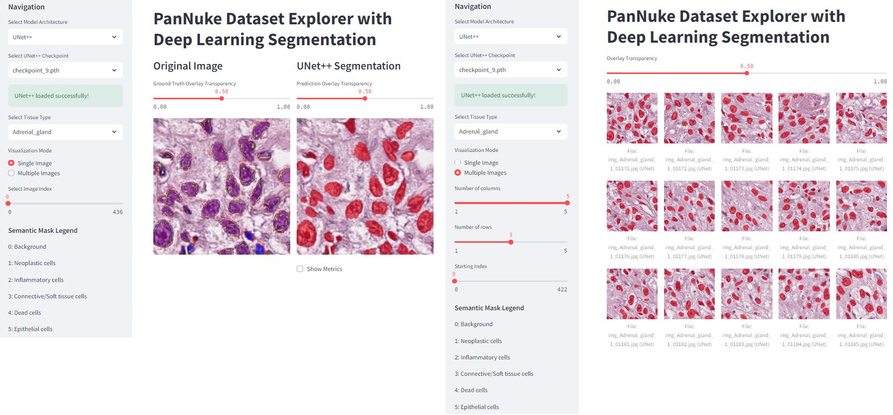

PyTorch models and an interactive viewer

Nuclei segmentation is a basic task in computational pathology. This project covers the full training and evaluation pipeline for the PanNuke dataset, which contains more than 7,000 annotated image patches from 19 tissue types.
It is meant for students learning computer vision and anyone who wants to inspect the dataset or model outputs. The repository includes preprocessing, readable PyTorch implementations, training code, and an inference app.
The repository includes four segmentation models:
The Streamlit app lets you:
The source code, training pipeline, and web app are on GitHub.